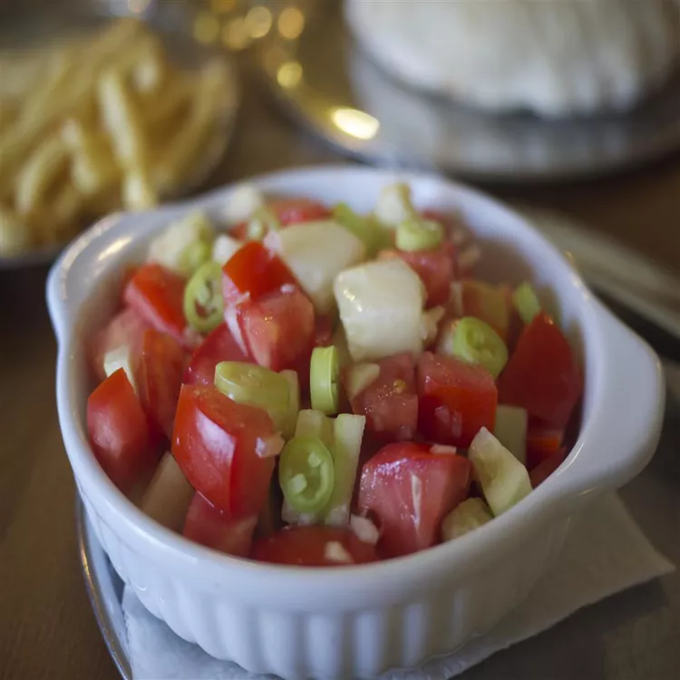

Serbian Salad

Description
It's nice, fresh, summery tomato salad with a kick! It's wonderful and easy-to-make salad.
Ingredients
- 1 cup red tomatoes wedges
- ½ cup cubed cucumber
- ¼ cup diced red onion
- ¼ cup extra-virgin olive oil
- salt to taste
- 1 banana pepper, sliced into ¼-inch rings
- parsley for garnish
Steps
- Combine tomatoes, cucumber, and red onion in a bowl.
- Drizzle with olive oil; stir.
- Season with salt.
- Sprinkle banana pepper slices on top; garnish with parsley.